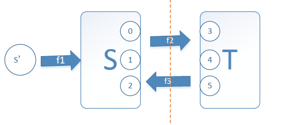

<!DOCTYPE html>
<html lang="zh">
<head><meta name="generator" content="Hexo 3.8.0">
    <meta charset="utf-8">
    
    <title>算法专题_图之网络流 | FEI&#39;s Blog</title>
    
    
        <meta name="keywords" content="图,网络流">
    
    <meta name="viewport" content="width=device-width, initial-scale=1, maximum-scale=1">
    <meta name="description" content="有一个自来水管道运输系统，起点是s，终点是t，途中经过的管道都有一个最大的容量。求从s到t的最大水流量是多少？
 网络最大流问题是网络的另一个基本问题。许多系统包含了流量问题。例如交通系统有车流量，金融系统有现金流，控制系统有信息流等。许多流问题主要是确定这类系统网络所能承受的最大流量以及如何达到这个最大流量。">
<meta name="keywords" content="图,网络流">
<meta property="og:type" content="article">
<meta property="og:title" content="算法专题_图之网络流">
<meta property="og:url" content="http://ff120.github.io/hexoblog/2017/05/05/技术/数据结构和算法/算法专题_图之网络流/index.html">
<meta property="og:site_name" content="FEI&#39;s Blog">
<meta property="og:description" content="有一个自来水管道运输系统，起点是s，终点是t，途中经过的管道都有一个最大的容量。求从s到t的最大水流量是多少？
 网络最大流问题是网络的另一个基本问题。许多系统包含了流量问题。例如交通系统有车流量，金融系统有现金流，控制系统有信息流等。许多流问题主要是确定这类系统网络所能承受的最大流量以及如何达到这个最大流量。">
<meta property="og:locale" content="zh-Hans">
<meta property="og:image" content="http://ff120.github.io/hexoblog/2017/05/05/技术/数据结构和算法/算法专题_图之网络流/2017-05-05_162502.png">
<meta property="og:image" content="http://ff120.github.io/hexoblog/2017/05/05/技术/数据结构和算法/算法专题_图之网络流/2017-05-05_172645.png">
<meta property="og:image" content="http://ff120.github.io/hexoblog/2017/05/05/技术/数据结构和算法/算法专题_图之网络流/2017-05-05_172712.png">
<meta property="og:image" content="http://ff120.github.io/hexoblog/2017/05/05/技术/数据结构和算法/算法专题_图之网络流/2017-05-05_163526.png">
<meta property="og:image" content="http://ff120.github.io/hexoblog/2017/05/05/技术/数据结构和算法/算法专题_图之网络流/2017-05-05_164453.png">
<meta property="og:image" content="http://ff120.github.io/hexoblog/2017/05/05/技术/数据结构和算法/算法专题_图之网络流/2017-05-05_165150.png">
<meta property="og:image" content="http://ff120.github.io/hexoblog/2017/05/05/技术/数据结构和算法/算法专题_图之网络流/2017-05-05_165642.png">
<meta property="og:image" content="http://ff120.github.io/hexoblog/2017/05/05/技术/数据结构和算法/算法专题_图之网络流/2017-05-05_175417.png">
<meta property="og:image" content="http://ff120.github.io/hexoblog/2017/05/05/技术/数据结构和算法/算法专题_图之网络流/2017-05-05_183244.png">
<meta property="og:image" content="http://ff120.github.io/hexoblog/2017/05/05/技术/数据结构和算法/算法专题_图之网络流/2017-05-05_185210.png">
<meta property="og:image" content="http://ff120.github.io/hexoblog/2017/05/05/技术/数据结构和算法/算法专题_图之网络流/2017-05-05_191021.png">
<meta property="og:image" content="http://ff120.github.io/hexoblog/2017/05/05/技术/数据结构和算法/算法专题_图之网络流/2017-05-05_201259.png">
<meta property="og:updated_time" content="2019-03-28T00:54:56.532Z">
<meta name="twitter:card" content="summary">
<meta name="twitter:title" content="算法专题_图之网络流">
<meta name="twitter:description" content="有一个自来水管道运输系统，起点是s，终点是t，途中经过的管道都有一个最大的容量。求从s到t的最大水流量是多少？
 网络最大流问题是网络的另一个基本问题。许多系统包含了流量问题。例如交通系统有车流量，金融系统有现金流，控制系统有信息流等。许多流问题主要是确定这类系统网络所能承受的最大流量以及如何达到这个最大流量。">
<meta name="twitter:image" content="http://ff120.github.io/hexoblog/2017/05/05/技术/数据结构和算法/算法专题_图之网络流/2017-05-05_162502.png">
    

    
        <link rel="alternate" href="/atom.xml" title="FEI&#39;s Blog" type="application/atom+xml">
    

    
        <link rel="icon" href="/hexoblog/favicon.ico">
    

    <link rel="stylesheet" href="/hexoblog/libs/font-awesome/css/font-awesome.min.css">
    <link rel="stylesheet" href="/hexoblog/libs/open-sans/styles.css">
    <link rel="stylesheet" href="/hexoblog/libs/source-code-pro/styles.css">

    <link rel="stylesheet" href="/hexoblog/css/style.css">
    <script src="/hexoblog/libs/jquery/2.1.3/jquery.min.js"></script>
    <script src="/hexoblog/libs/jquery/plugins/cookie/1.4.1/jquery.cookie.js"></script>
    
    
        <link rel="stylesheet" href="/hexoblog/libs/lightgallery/css/lightgallery.min.css">
    
    
        <link rel="stylesheet" href="/hexoblog/libs/justified-gallery/justifiedGallery.min.css">
    
    
    
    


    
        <script async src="//busuanzi.ibruce.info/busuanzi/2.3/busuanzi.pure.mini.js"></script>
    
</head>
</html>
<body>
    <div id="container">
        <header id="header">
    <div id="header-main" class="header-inner">
        <div class="outer">
            <a href="/hexoblog/" id="logo">
                <i class="logo"></i>
                <span class="site-title">FEI&#39;s Blog</span>
            </a>
            <nav id="main-nav">
                
                    <a class="main-nav-link" href="/hexoblog/">首页</a>
                
                    <a class="main-nav-link" href="/hexoblog/archives">归档</a>
                
                    <a class="main-nav-link" href="/hexoblog/categories">分类</a>
                
                    <a class="main-nav-link" href="/hexoblog/tags">标签</a>
                
                    <a class="main-nav-link" href="/hexoblog/about">关于</a>
                
            </nav>
            
            <div id="search-form-wrap">

    <form class="search-form">
        <input type="text" class="ins-search-input search-form-input" placeholder="Rechercher">
        <button type="submit" class="search-form-submit"></button>
    </form>
    <div class="ins-search">
    <div class="ins-search-mask"></div>
    <div class="ins-search-container">
        <div class="ins-input-wrapper">
            <input type="text" class="ins-search-input" placeholder="Type something...">
            <span class="ins-close ins-selectable"><i class="fa fa-times-circle"></i></span>
        </div>
        <div class="ins-section-wrapper">
            <div class="ins-section-container"></div>
        </div>
    </div>
</div>
<script>
(function (window) {
    var INSIGHT_CONFIG = {
        TRANSLATION: {
            POSTS: 'Articles',
            PAGES: 'Pages',
            CATEGORIES: 'Catégories',
            TAGS: 'Tags',
            UNTITLED: '(Untitled)',
        },
        ROOT_URL: '/hexoblog/',
        CONTENT_URL: '/hexoblog/content.json',
    };
    window.INSIGHT_CONFIG = INSIGHT_CONFIG;
})(window);
</script>
<script src="/hexoblog/js/insight.js"></script>

</div>
        </div>
    </div>
    <div id="main-nav-mobile" class="header-sub header-inner">
        <table class="menu outer">
            <tr>
                
                    <td><a class="main-nav-link" href="/hexoblog/">首页</a></td>
                
                    <td><a class="main-nav-link" href="/hexoblog/archives">归档</a></td>
                
                    <td><a class="main-nav-link" href="/hexoblog/categories">分类</a></td>
                
                    <td><a class="main-nav-link" href="/hexoblog/tags">标签</a></td>
                
                    <td><a class="main-nav-link" href="/hexoblog/about">关于</a></td>
                
                <td>
                    
    <div class="search-form">
        <input type="text" class="ins-search-input search-form-input" placeholder="Rechercher">
    </div>

                </td>
            </tr>
        </table>
    </div>
</header>

        <div class="outer">
            
            
                <aside id="sidebar">
   
        
    <div class="widget-wrap" id="categories">
        <h3 class="widget-title">
            <span>Catégories</span>
            &nbsp;
            <a id="allExpand" href="#">
                <i class="fa fa-angle-double-down fa-2x"></i>
            </a>
        </h3>
        
        
        
         <ul class="unstyled" id="tree"> 
                    <li class="directory">
                        <a href="#" data-role="directory">
                            <i class="fa fa-folder"></i>
                            &nbsp;
                            心理学
                        </a>
                         <ul class="unstyled" id="tree"> 
                    <li class="directory">
                        <a href="#" data-role="directory">
                            <i class="fa fa-folder"></i>
                            &nbsp;
                            记忆魔法
                        </a>
                         <ul class="unstyled" id="tree">  <li class="file"><a href="/hexoblog/2019/04/03/心理学/记忆魔法/代码记忆法/">代码记忆法</a></li>  </ul> 
                    </li> 
                     </ul> 
                    </li> 
                    
                    <li class="directory open">
                        <a href="#" data-role="directory">
                            <i class="fa fa-folder-open"></i>
                            &nbsp;
                            技术
                        </a>
                         <ul class="unstyled" id="tree"> 
                    <li class="directory">
                        <a href="#" data-role="directory">
                            <i class="fa fa-folder"></i>
                            &nbsp;
                            Web开发
                        </a>
                         <ul class="unstyled" id="tree">  <li class="file"><a href="/hexoblog/2016/06/11/技术/Web开发/后台开发_How-to-install-Laravel-framework/">How to install Laravel framework</a></li>  <li class="file"><a href="/hexoblog/2016/06/11/技术/Web开发/后台开发_laravel-4-note-01/">laravel 4 note 01</a></li>  <li class="file"><a href="/hexoblog/2016/06/11/技术/Web开发/后台开发_Make-phpStorm-friendly-to-laravel/">Make phpStorm friendly to laravel</a></li>  <li class="file"><a href="/hexoblog/2016/06/11/技术/Web开发/后台开发_sublime-Text-tricks/">sublime Text tricks</a></li>  <li class="file"><a href="/hexoblog/2016/06/11/技术/Web开发/后台开发_think-php-note-01/">think php note 01</a></li>  <li class="file"><a href="/hexoblog/2016/06/11/技术/Web开发/后台开发_think-php-note-02/">think php note 02</a></li>  <li class="file"><a href="/hexoblog/2016/06/11/技术/Web开发/后台开发_think-php-note-03/">think php note 03</a></li>  <li class="file"><a href="/hexoblog/2016/06/11/技术/Web开发/后台开发_PHP编译less文件-lessphp的使用/">PHP编译less文件-lessphp的使用</a></li>  <li class="file"><a href="/hexoblog/2016/06/11/技术/Web开发/后台开发_Lavarel-后台组件frozenode的使用/">Lavarel 后台组件frozenode的使用</a></li>  <li class="file"><a href="/hexoblog/2016/06/11/技术/Web开发/后台开发_Linux常用命令/">Linux常用命令</a></li>  <li class="file"><a href="/hexoblog/2016/06/11/技术/Web开发/后台开发_Linux主机之间同步文件/">Linux主机之间同步文件</a></li>  <li class="file"><a href="/hexoblog/2016/06/11/技术/Web开发/后台开发_PHP基本操作/">PHP基本操作</a></li>  <li class="file"><a href="/hexoblog/2016/06/11/技术/Web开发/后台开发_短信验证码的实现/">短信验证码的实现</a></li>  <li class="file"><a href="/hexoblog/2016/06/11/技术/Web开发/后台开发_配置Apache支持使用HTTPS/">配置Apache支持使用HTTPS</a></li>  <li class="file"><a href="/hexoblog/2016/06/11/技术/Web开发/测试_使用Selenium测试UI/">测试_使用Selenium测试UI</a></li>  <li class="file"><a href="/hexoblog/2016/06/11/技术/Web开发/后台开发_PhpStorm常用快捷键/">PhpStorm常用快捷键</a></li>  <li class="file"><a href="/hexoblog/2016/06/11/技术/Web开发/微信开发_微信发送消息PHP-SDK/">微信发送消息PHP SDK</a></li>  <li class="file"><a href="/hexoblog/2016/06/11/技术/Web开发/微信开发_获取地理位置/">微信获取地理位置 </a></li>  <li class="file"><a href="/hexoblog/2016/06/11/技术/Web开发/微信开发_发送模板消息的代码/">微信发送模板消息的代码</a></li>  <li class="file"><a href="/hexoblog/2016/06/11/技术/Web开发/测试_Selenium-定位元素的几种方式/">测试_Selenium定位元素的几种方式</a></li>  <li class="file"><a href="/hexoblog/2016/06/11/技术/Web开发/测试_Selenium-Action/">测试_Selenium Action</a></li>  <li class="file"><a href="/hexoblog/2016/06/11/技术/Web开发/测试_Apache-JMeter的使用/">测试_Apache JMeter的使用</a></li>  <li class="file"><a href="/hexoblog/2016/06/12/技术/Web开发/后台开发_Apache-配置虚拟主机/">Apache 配置虚拟主机</a></li>  <li class="file"><a href="/hexoblog/2016/06/23/技术/Web开发/后台开发_改进PHP的var-dump-方法使之适应显示从数据库中查出来的数据/">改进PHP的var_dump()方法使之适应显示从数据库中查出来的数据</a></li>  <li class="file"><a href="/hexoblog/2016/06/23/技术/Web开发/后台开发_PHP读写XLS/">PHP读写XLS</a></li>  <li class="file"><a href="/hexoblog/2016/06/30/技术/Web开发/前端_jQuery-EasyUI-学习笔记/">JQuery EasyUI 学习笔记</a></li>  <li class="file"><a href="/hexoblog/2016/06/30/技术/Web开发/前端_bootsharp学习笔记/">Bootsharp学习笔记</a></li>  </ul> 
                    </li> 
                    
                    <li class="directory">
                        <a href="#" data-role="directory">
                            <i class="fa fa-folder"></i>
                            &nbsp;
                            专业术语
                        </a>
                         <ul class="unstyled" id="tree">  <li class="file"><a href="/hexoblog/2017/07/24/技术/专业术语/术语/">英语</a></li>  </ul> 
                    </li> 
                    
                    <li class="directory">
                        <a href="#" data-role="directory">
                            <i class="fa fa-folder"></i>
                            &nbsp;
                            大数据
                        </a>
                         <ul class="unstyled" id="tree">  <li class="file"><a href="/hexoblog/2016/06/23/技术/大数据/大数据_Spark环境下的Kmeans-Python实现/">Spark环境下的Kmeans-Python实现</a></li>  <li class="file"><a href="/hexoblog/2017/10/06/技术/大数据/大数据基础框架/">大数据基础框架</a></li>  </ul> 
                    </li> 
                    
                    <li class="directory">
                        <a href="#" data-role="directory">
                            <i class="fa fa-folder"></i>
                            &nbsp;
                            工具
                        </a>
                         <ul class="unstyled" id="tree"> 
                    <li class="directory">
                        <a href="#" data-role="directory">
                            <i class="fa fa-folder"></i>
                            &nbsp;
                            AutoHotKey
                        </a>
                         <ul class="unstyled" id="tree">  <li class="file"><a href="/hexoblog/2018/12/02/技术/工具/AutoHotKey/AutoHotKey非常有用的脚本/">AutoHotKey非常有用的脚本</a></li>  </ul> 
                    </li> 
                    
                    <li class="directory">
                        <a href="#" data-role="directory">
                            <i class="fa fa-folder"></i>
                            &nbsp;
                            Git
                        </a>
                         <ul class="unstyled" id="tree">  <li class="file"><a href="/hexoblog/2017/05/04/技术/工具/Git/GIT的使用01-基本功能/">GIT的使用01-基本功能</a></li>  <li class="file"><a href="/hexoblog/2018/07/29/技术/工具/Git/Git查询手册/">Git 手册</a></li>  </ul> 
                    </li> 
                    
                    <li class="directory">
                        <a href="#" data-role="directory">
                            <i class="fa fa-folder"></i>
                            &nbsp;
                            Hexo
                        </a>
                         <ul class="unstyled" id="tree">  <li class="file"><a href="/hexoblog/2016/06/12/技术/工具/Hexo/Hexo的使用02-同步/">Hexo的使用02-同步</a></li>  <li class="file"><a href="/hexoblog/2016/06/13/技术/工具/Hexo/Hexo的使用01-搭建/">Hexo的使用01-搭建</a></li>  <li class="file"><a href="/hexoblog/2017/04/12/技术/工具/Hexo/Hexo的使用05-Atom编辑器/">Hexo的使用05-Atom编辑器</a></li>  <li class="file"><a href="/hexoblog/2017/04/12/技术/工具/Hexo/Hexo的使用04-数学公式/">Hexo的使用04-数学公式</a></li>  <li class="file"><a href="/hexoblog/2017/05/05/技术/工具/Hexo/Hexo的使用03-迁移/">Hexo的使用03-迁移</a></li>  <li class="file"><a href="/hexoblog/2017/07/17/技术/工具/Hexo/Hexo的使用06-使用gist存储代码片段/">Hexo中使用gist存储代码片段</a></li>  </ul> 
                    </li> 
                    
                    <li class="directory">
                        <a href="#" data-role="directory">
                            <i class="fa fa-folder"></i>
                            &nbsp;
                            Visio
                        </a>
                         <ul class="unstyled" id="tree">  <li class="file"><a href="/hexoblog/2017/05/05/技术/工具/Visio/VISIO的使用01-基础入门/">VISIO的使用01-基础入门</a></li>  </ul> 
                    </li> 
                    
                    <li class="directory">
                        <a href="#" data-role="directory">
                            <i class="fa fa-folder"></i>
                            &nbsp;
                            图片处理
                        </a>
                         <ul class="unstyled" id="tree">  <li class="file"><a href="/hexoblog/2017/05/05/技术/工具/图片处理/图片处理02-一寸照片/">图片处理02-一寸照片</a></li>  <li class="file"><a href="/hexoblog/2017/05/17/技术/工具/图片处理/图片处理01-合并多张图片/">图片处理01-合并多张图片</a></li>  </ul> 
                    </li> 
                    
                    <li class="directory">
                        <a href="#" data-role="directory">
                            <i class="fa fa-folder"></i>
                            &nbsp;
                            正则表达式
                        </a>
                         <ul class="unstyled" id="tree">  <li class="file"><a href="/hexoblog/2018/07/29/技术/工具/正则表达式/正则表达式/">正则表达式</a></li>  </ul> 
                    </li> 
                    
                    <li class="directory">
                        <a href="#" data-role="directory">
                            <i class="fa fa-folder"></i>
                            &nbsp;
                            编程IDE
                        </a>
                         <ul class="unstyled" id="tree"> 
                    <li class="directory">
                        <a href="#" data-role="directory">
                            <i class="fa fa-folder"></i>
                            &nbsp;
                            Anaconda
                        </a>
                         <ul class="unstyled" id="tree">  <li class="file"><a href="/hexoblog/2017/04/18/技术/工具/编程IDE/Anaconda/Anaconda的使用01-基础/">Anaconda的使用01-基础</a></li>  </ul> 
                    </li> 
                    
                    <li class="directory">
                        <a href="#" data-role="directory">
                            <i class="fa fa-folder"></i>
                            &nbsp;
                            JetBrainsCLion
                        </a>
                         <ul class="unstyled" id="tree">  <li class="file"><a href="/hexoblog/2017/05/04/技术/工具/编程IDE/JetBrainsCLion/JetBrainsCLion的使用01-入门/">JetBrainsCLion的使用01-入门</a></li>  </ul> 
                    </li> 
                    
                    <li class="directory">
                        <a href="#" data-role="directory">
                            <i class="fa fa-folder"></i>
                            &nbsp;
                            VSCode
                        </a>
                         <ul class="unstyled" id="tree">  <li class="file"><a href="/hexoblog/2017/07/24/技术/工具/编程IDE/VSCode/Visual-Studio-Code使用技巧/">Visual Studio Code使用技巧</a></li>  </ul> 
                    </li> 
                     </ul> 
                    </li> 
                    
                    <li class="directory">
                        <a href="#" data-role="directory">
                            <i class="fa fa-folder"></i>
                            &nbsp;
                            网络软件
                        </a>
                         <ul class="unstyled" id="tree">  <li class="file"><a href="/hexoblog/2016/06/12/技术/工具/网络软件/Windows全局代理软件Proxifier/">Windows全局代理软件Proxifier</a></li>  <li class="file"><a href="/hexoblog/2016/06/12/技术/工具/网络软件/Windows手工修改路由表/">Windows手工修改路由表</a></li>  </ul> 
                    </li> 
                     </ul> 
                    </li> 
                    
                    <li class="directory">
                        <a href="#" data-role="directory">
                            <i class="fa fa-folder"></i>
                            &nbsp;
                            数据库
                        </a>
                         <ul class="unstyled" id="tree">  <li class="file"><a href="/hexoblog/2016/06/11/技术/数据库/数据库_Redis入门/">Redis入门</a></li>  <li class="file"><a href="/hexoblog/2016/06/12/技术/数据库/数据库_使用Database-Configuration-Assist-工具创建oracle数据库/">使用Database Configuration Assist 工具创建oracle数据库</a></li>  <li class="file"><a href="/hexoblog/2017/11/02/技术/数据库/SQL/">SQL</a></li>  </ul> 
                    </li> 
                    
                    <li class="directory open">
                        <a href="#" data-role="directory">
                            <i class="fa fa-folder-open"></i>
                            &nbsp;
                            数据结构和算法
                        </a>
                         <ul class="unstyled" id="tree">  <li class="file"><a href="/hexoblog/2017/03/21/技术/数据结构和算法/算法专题_二维数组/">算法专题_二维数组</a></li>  <li class="file"><a href="/hexoblog/2017/03/21/技术/数据结构和算法/算法专题_矩阵和图/">矩阵和用矩阵表示的图的相关问题</a></li>  <li class="file"><a href="/hexoblog/2017/03/21/技术/数据结构和算法/算法专题_位运算/">算法专题_位运算</a></li>  <li class="file"><a href="/hexoblog/2017/03/23/技术/数据结构和算法/算法专题_链表/">算法专题_链表</a></li>  <li class="file"><a href="/hexoblog/2017/04/05/技术/数据结构和算法/算法专题_动态规划/">算法专题_动态规划</a></li>  <li class="file"><a href="/hexoblog/2017/04/06/技术/数据结构和算法/算法专题_图/">算法专题_图问题</a></li>  <li class="file"><a href="/hexoblog/2017/04/08/技术/数据结构和算法/做过的算法题汇总表/">做过的算法题汇总表</a></li>  <li class="file"><a href="/hexoblog/2017/04/09/技术/数据结构和算法/算法专题_二叉树/">算法专题_二叉树</a></li>  <li class="file"><a href="/hexoblog/2017/04/09/技术/数据结构和算法/算法专题_通用树结构/">算法专题_通用树结构</a></li>  <li class="file"><a href="/hexoblog/2017/04/10/技术/数据结构和算法/算法专题_大数据和空间限制/">算法专题_大数据和空间限制</a></li>  <li class="file"><a href="/hexoblog/2017/04/10/技术/数据结构和算法/算法专题_排列组合/">算法专题_排列组合</a></li>  <li class="file"><a href="/hexoblog/2017/04/11/技术/数据结构和算法/本地代码集锦/">本地代码集锦</a></li>  <li class="file"><a href="/hexoblog/2017/04/12/技术/数据结构和算法/算法专题_栈和队列/">算法专题_栈和队列</a></li>  <li class="file"><a href="/hexoblog/2017/04/16/技术/数据结构和算法/算法专题_排序算法/">算法专题_排序算法</a></li>  <li class="file"><a href="/hexoblog/2017/04/17/技术/数据结构和算法/算法专题_算法总结/">算法专题_算法总结</a></li>  <li class="file"><a href="/hexoblog/2017/05/02/技术/数据结构和算法/算法专题_一维数组/">算法专题_一维数组</a></li>  <li class="file active"><a href="/hexoblog/2017/05/05/技术/数据结构和算法/算法专题_图之网络流/">算法专题_图之网络流</a></li>  <li class="file"><a href="/hexoblog/2017/05/06/技术/数据结构和算法/算法专题_图之最短路径/">算法专题_图之最短路径</a></li>  <li class="file"><a href="/hexoblog/2017/05/06/技术/数据结构和算法/算法专题_最小生成树/">算法专题_最小生成树</a></li>  <li class="file"><a href="/hexoblog/2017/05/06/技术/数据结构和算法/算法专题_霍夫曼编码/">算法专题_霍夫曼编码(哈夫曼编码)</a></li>  <li class="file"><a href="/hexoblog/2017/05/07/技术/数据结构和算法/Kickstart-Round-B-2017/">Kickstart Round B 2017</a></li>  <li class="file"><a href="/hexoblog/2017/05/08/技术/数据结构和算法/算法专题_模运算/">算法专题_模运算</a></li>  <li class="file"><a href="/hexoblog/2017/05/09/技术/数据结构和算法/算法专题_素数问题/">算法专题_素数问题</a></li>  <li class="file"><a href="/hexoblog/2017/05/11/技术/数据结构和算法/算法专题_计算几何/">算法专题_计算几何</a></li>  <li class="file"><a href="/hexoblog/2017/05/27/技术/数据结构和算法/计蒜之道2017程序设计大赛/">计蒜之道2017程序设计大赛</a></li>  <li class="file"><a href="/hexoblog/2017/05/28/技术/数据结构和算法/算法专题_字符串匹配/">算法专题_字符串匹配</a></li>  <li class="file"><a href="/hexoblog/2017/07/12/技术/数据结构和算法/四等分数组/">四等分数组</a></li>  <li class="file"><a href="/hexoblog/2017/07/12/技术/数据结构和算法/矩阵的遍历/">矩阵的遍历</a></li>  <li class="file"><a href="/hexoblog/2017/07/20/技术/数据结构和算法/N皇后问题/">N皇后问题</a></li>  <li class="file"><a href="/hexoblog/2017/07/23/技术/数据结构和算法/算法专题_线段树/">算法专题_线段树</a></li>  <li class="file"><a href="/hexoblog/2017/07/23/技术/数据结构和算法/算法专题_树状数组/">算法专题_树状数组</a></li>  <li class="file"><a href="/hexoblog/2017/07/23/技术/数据结构和算法/算法专题_并查集/">算法专题_并查集</a></li>  <li class="file"><a href="/hexoblog/2017/07/26/技术/数据结构和算法/算法专题_链表2/">算法专题_链表2</a></li>  <li class="file"><a href="/hexoblog/2017/08/06/技术/数据结构和算法/算法专题_二叉堆/">算法专题_二叉堆</a></li>  <li class="file"><a href="/hexoblog/2017/08/07/技术/数据结构和算法/算法专题_快速排序/">算法专题_快速排序</a></li>  <li class="file"><a href="/hexoblog/2017/08/07/技术/数据结构和算法/算法专题_归并排序/">算法专题_归并排序</a></li>  <li class="file"><a href="/hexoblog/2017/08/13/技术/数据结构和算法/算法专题-hihocoder/">算法专题_hihocoder</a></li>  <li class="file"><a href="/hexoblog/2017/08/17/技术/数据结构和算法/算法专题-贪心法/">算法专题_贪心法</a></li>  <li class="file"><a href="/hexoblog/2017/08/18/技术/数据结构和算法/阿里在线测评-兔子繁殖问题/">阿里笔试</a></li>  <li class="file"><a href="/hexoblog/2017/08/22/技术/数据结构和算法/今日头条-在线编程题/">今日头条_在线编程题</a></li>  <li class="file"><a href="/hexoblog/2017/08/23/技术/数据结构和算法/算法专题-字典树-Trie树/">算法专题_字典树(Trie树)</a></li>  <li class="file"><a href="/hexoblog/2017/09/23/技术/数据结构和算法/算法专题_二叉树2/">算法专题_二叉树2</a></li>  <li class="file"><a href="/hexoblog/2017/09/27/技术/数据结构和算法/手写代码-其他/">手写代码-其他</a></li>  <li class="file"><a href="/hexoblog/2017/10/03/技术/数据结构和算法/算法专题-常见题目/">算法专题_常见题目</a></li>  </ul> 
                    </li> 
                    
                    <li class="directory">
                        <a href="#" data-role="directory">
                            <i class="fa fa-folder"></i>
                            &nbsp;
                            机器学习
                        </a>
                         <ul class="unstyled" id="tree"> 
                    <li class="directory">
                        <a href="#" data-role="directory">
                            <i class="fa fa-folder"></i>
                            &nbsp;
                            深度学习
                        </a>
                         <ul class="unstyled" id="tree">  <li class="file"><a href="/hexoblog/2017/03/22/技术/机器学习/深度学习/深度学习_Theano使用技巧/">深度学习_Theano使用技巧</a></li>  <li class="file"><a href="/hexoblog/2017/04/18/技术/机器学习/深度学习/深度学习_基本概念/">深度学习_基本概念</a></li>  <li class="file"><a href="/hexoblog/2017/04/18/技术/机器学习/深度学习/深度学习_利用神经网络识别手写数字/">深度学习__利用神经网络识别手写数字</a></li>  <li class="file"><a href="/hexoblog/2017/04/19/技术/机器学习/深度学习/深度学习_反向传播算法及简单实例/">深度学习_反向传播算法及简单实例</a></li>  <li class="file"><a href="/hexoblog/2017/04/19/技术/机器学习/深度学习/深度学习_Keras使用技巧/">深度学习_Keras使用技巧</a></li>  <li class="file"><a href="/hexoblog/2017/04/20/技术/机器学习/深度学习/深度学习_使用keras实现autoencoder/">深度学习_使用keras实现autoencoder</a></li>  <li class="file"><a href="/hexoblog/2017/04/20/技术/机器学习/深度学习/深度学习_卷积神经网络/">深度学习_卷积神经网络</a></li>  <li class="file"><a href="/hexoblog/2017/04/27/技术/机器学习/深度学习/深度学习_使用autoencoder自动提取特征/">深度学习_使用autoencoder自动提取特征</a></li>  <li class="file"><a href="/hexoblog/2017/05/10/技术/机器学习/深度学习/深度学习_递归神经网络(RNN)/">深度学习_递归神经网络(RNN)</a></li>  <li class="file"><a href="/hexoblog/2017/05/10/技术/机器学习/深度学习/深度学习_限制波尔茨曼向量机(RBM)/">深度学习_限制波尔茨曼向量机(RBM)</a></li>  <li class="file"><a href="/hexoblog/2017/05/12/技术/机器学习/深度学习/深度学习_TensorFlow使用技巧/">深度学习_TensorFlow使用技巧</a></li>  </ul> 
                    </li> 
                     <li class="file"><a href="/hexoblog/2016/06/16/技术/机器学习/机器学习_Scikit-Learn-ManyClassifier/">同时使用多个分类器(Scikit-Learn)</a></li>  <li class="file"><a href="/hexoblog/2016/06/16/技术/机器学习/机器学习_范数/">机器学习_范数</a></li>  <li class="file"><a href="/hexoblog/2016/06/20/技术/机器学习/机器学习_学习路线/">机器学习_学习路线</a></li>  <li class="file"><a href="/hexoblog/2016/06/20/技术/机器学习/机器学习_手写数字识别/">机器学习_手写数字识别</a></li>  <li class="file"><a href="/hexoblog/2016/07/11/技术/机器学习/机器学习_Matplolib使用技巧/">机器学习_Matplolib使用技巧</a></li>  <li class="file"><a href="/hexoblog/2017/03/22/技术/机器学习/机器学习_人脸识别/">机器学习_人脸识别</a></li>  <li class="file"><a href="/hexoblog/2017/05/04/技术/机器学习/机器学习_Matlab使用技巧/">机器学习_Matlab使用技巧</a></li>  <li class="file"><a href="/hexoblog/2017/05/11/技术/机器学习/机器学习_时间序列预测分析算法/">机器学习_时间序列预测分析算法</a></li>  <li class="file"><a href="/hexoblog/2017/05/14/技术/机器学习/机器学习_Scikit-Learn使用技巧/">深度学习_Scikit-Learn机器学习算法的使用</a></li>  <li class="file"><a href="/hexoblog/2017/05/15/技术/机器学习/机器学习_时间序列预测の广告效果预测/">机器学习_时间序列预测の广告效果预测</a></li>  <li class="file"><a href="/hexoblog/2017/05/15/技术/机器学习/机器学习_算法汇总/">机器学习_算法汇总</a></li>  <li class="file"><a href="/hexoblog/2017/05/17/技术/机器学习/机器学习_Pandas使用技巧/">深度学习_Pandas使用技巧</a></li>  <li class="file"><a href="/hexoblog/2017/05/19/技术/机器学习/机器学习_感知机/">机器学习_感知机</a></li>  <li class="file"><a href="/hexoblog/2017/05/19/技术/机器学习/机器学习_逻辑回归/">机器学习_逻辑回归</a></li>  <li class="file"><a href="/hexoblog/2017/05/22/技术/机器学习/机器学习_损失函数/">机器学习_损失函数</a></li>  <li class="file"><a href="/hexoblog/2017/06/03/技术/机器学习/机器学习_分类器性能的度量/">机器学习_分类器性能的度量</a></li>  <li class="file"><a href="/hexoblog/2017/06/15/技术/机器学习/机器学习_Scipy使用技巧/">机器学习_Scipy使用技巧</a></li>  <li class="file"><a href="/hexoblog/2017/06/15/技术/机器学习/机器学习_Python使用技巧/">深度学习_Python使用技巧</a></li>  <li class="file"><a href="/hexoblog/2017/07/23/技术/机器学习/机器学习-Numpy使用技巧/">机器学习_Numpy使用技巧</a></li>  <li class="file"><a href="/hexoblog/2017/10/15/技术/机器学习/KNN-with-C/">KNN with C++</a></li>  <li class="file"><a href="/hexoblog/2017/11/04/技术/机器学习/机器学习-绪论-基本概念/">机器学习-绪论-基本概念</a></li>  <li class="file"><a href="/hexoblog/2017/11/04/技术/机器学习/机器学习-第一章-逻辑回归/">机器学习-第一章-逻辑回归</a></li>  <li class="file"><a href="/hexoblog/2017/11/04/技术/机器学习/机器学习-第二章-决策树/">机器学习-第二章-决策树</a></li>  <li class="file"><a href="/hexoblog/2017/11/04/技术/机器学习/机器学习-第三章-朴素贝叶斯/">机器学习-第三章-朴素贝叶斯</a></li>  <li class="file"><a href="/hexoblog/2017/11/04/技术/机器学习/机器学习-第四章-支持向量机/">机器学习-第四章-支持向量机</a></li>  <li class="file"><a href="/hexoblog/2017/11/04/技术/机器学习/机器学习-第五章-最近邻/">机器学习-第五章-最近邻</a></li>  <li class="file"><a href="/hexoblog/2017/11/04/技术/机器学习/机器学习-第六章-kmeans/">机器学习-第六章-kmeans</a></li>  <li class="file"><a href="/hexoblog/2017/11/04/技术/机器学习/机器学习-第七章-感知机/">机器学习-第七章-感知机</a></li>  </ul> 
                    </li> 
                    
                    <li class="directory">
                        <a href="#" data-role="directory">
                            <i class="fa fa-folder"></i>
                            &nbsp;
                            编程语言
                        </a>
                         <ul class="unstyled" id="tree"> 
                    <li class="directory">
                        <a href="#" data-role="directory">
                            <i class="fa fa-folder"></i>
                            &nbsp;
                            C++
                        </a>
                         <ul class="unstyled" id="tree">  <li class="file"><a href="/hexoblog/2017/04/07/技术/编程语言/C++/C++语言技巧/">C++语言技巧</a></li>  </ul> 
                    </li> 
                     </ul> 
                    </li> 
                    
                    <li class="directory">
                        <a href="#" data-role="directory">
                            <i class="fa fa-folder"></i>
                            &nbsp;
                            计算机基础
                        </a>
                         <ul class="unstyled" id="tree"> 
                    <li class="directory">
                        <a href="#" data-role="directory">
                            <i class="fa fa-folder"></i>
                            &nbsp;
                            计算机网络
                        </a>
                         <ul class="unstyled" id="tree">  <li class="file"><a href="/hexoblog/2016/06/12/技术/计算机基础/计算机网络/网络_校园网多终端上网方案/">校园网多终端上网方案</a></li>  <li class="file"><a href="/hexoblog/2017/07/12/技术/计算机基础/计算机网络/计算机网络/">计算机网络</a></li>  </ul> 
                    </li> 
                     </ul> 
                    </li> 
                    
                    <li class="directory">
                        <a href="#" data-role="directory">
                            <i class="fa fa-folder"></i>
                            &nbsp;
                            认知神经科学
                        </a>
                         <ul class="unstyled" id="tree">  <li class="file"><a href="/hexoblog/2016/06/12/技术/认知神经科学/文献检索方法/">文献检索方法</a></li>  <li class="file"><a href="/hexoblog/2016/06/12/技术/认知神经科学/参考文献书写格式/">参考文献书写格式</a></li>  <li class="file"><a href="/hexoblog/2016/06/12/技术/认知神经科学/使用Python处理fMRI数据/">使用Python处理fMRI数据</a></li>  <li class="file"><a href="/hexoblog/2016/06/22/技术/认知神经科学/中英文对照/">中英文对照</a></li>  <li class="file"><a href="/hexoblog/2017/01/03/技术/认知神经科学/circos入门教程/">circos入门教程</a></li>  <li class="file"><a href="/hexoblog/2017/03/08/技术/认知神经科学/基于视频的车牌识别和流量统计/">基于视频的车牌识别和流量统计</a></li>  <li class="file"><a href="/hexoblog/2017/03/08/技术/认知神经科学/基于贝叶斯网络和隐性知识的AU识别研究/">基于贝叶斯网络和隐性知识的AU识别研究</a></li>  <li class="file"><a href="/hexoblog/2017/03/09/技术/认知神经科学/基于连接的脑信息解码研究/">基于连接信息的脑信息解码研究</a></li>  <li class="file"><a href="/hexoblog/2017/03/09/技术/认知神经科学/认知神经科学系列目录/">认知神经科学系列目录</a></li>  <li class="file"><a href="/hexoblog/2017/03/20/技术/认知神经科学/多被试多RUN批量预处理(SPM)/">多被试多RUN批量预处理(SPM)</a></li>  <li class="file"><a href="/hexoblog/2017/03/20/技术/认知神经科学/SPM预处理中的常用操作/">SPM预处理中的常用操作</a></li>  <li class="file"><a href="/hexoblog/2017/03/20/技术/认知神经科学/动态因果模型(DCM)的批量定义和估计/">动态因果模型(DCM)的批量定义和估计</a></li>  <li class="file"><a href="/hexoblog/2017/04/13/技术/认知神经科学/使用SPM做Second-Level分析/">使用SPM做Second_Level分析</a></li>  <li class="file"><a href="/hexoblog/2017/04/13/技术/认知神经科学/DCM模型的定义和估计/">DCM模型的定义和估计</a></li>  <li class="file"><a href="/hexoblog/2017/04/14/技术/认知神经科学/XJVIEW的使用技巧/">XJVIEW的使用技巧</a></li>  <li class="file"><a href="/hexoblog/2017/04/14/技术/认知神经科学/SPM中函数的修改和使用/">SPM中函数的修改和使用</a></li>  <li class="file"><a href="/hexoblog/2017/05/02/技术/认知神经科学/fMRI中常用的工具包/">fMRI中常用的工具包</a></li>  <li class="file"><a href="/hexoblog/2017/05/11/技术/认知神经科学/使用3D卷积神经神经网络提取脑成像数据的特征/">使用3D卷积神经神经网络提取脑成像数据的特征</a></li>  <li class="file"><a href="/hexoblog/2017/05/14/技术/认知神经科学/fMRI相关的资源汇总/">fMRI相关的资源汇总</a></li>  <li class="file"><a href="/hexoblog/2017/05/30/技术/认知神经科学/fMRI相关问题汇总/">fMRI相关问题汇总</a></li>  </ul> 
                    </li> 
                     </ul> 
                    </li> 
                    
                    <li class="directory">
                        <a href="#" data-role="directory">
                            <i class="fa fa-folder"></i>
                            &nbsp;
                            收藏夹
                        </a>
                         <ul class="unstyled" id="tree">  <li class="file"><a href="/hexoblog/2017/03/22/收藏夹/博客集锦/">博客收藏</a></li>  </ul> 
                    </li> 
                     </ul> 
    </div>
    <script>
        $(document).ready(function() {
            var iconFolderOpenClass  = 'fa-folder-open';
            var iconFolderCloseClass = 'fa-folder';
            var iconAllExpandClass = 'fa-angle-double-down';
            var iconAllPackClass = 'fa-angle-double-up';
            // Handle directory-tree expansion:
            // 左键单独展开目录
            $(document).on('click', '#categories a[data-role="directory"]', function (event) {
                event.preventDefault();

                var icon = $(this).children('.fa');
                var expanded = icon.hasClass(iconFolderOpenClass);
                var subtree = $(this).siblings('ul');
                icon.removeClass(iconFolderOpenClass).removeClass(iconFolderCloseClass);
                if (expanded) {
                    if (typeof subtree != 'undefined') {
                        subtree.slideUp({ duration: 100 });
                    }
                    icon.addClass(iconFolderCloseClass);
                } else {
                    if (typeof subtree != 'undefined') {
                        subtree.slideDown({ duration: 100 });
                    }
                    icon.addClass(iconFolderOpenClass);
                }
            });
            // 右键展开下属所有目录
            $('#categories a[data-role="directory"]').bind("contextmenu", function(event){
                event.preventDefault();
                
                var icon = $(this).children('.fa');
                var expanded = icon.hasClass(iconFolderOpenClass);
                var listNode = $(this).siblings('ul');
                var subtrees = $.merge(listNode.find('li ul'), listNode);
                var icons = $.merge(listNode.find('.fa'), icon);
                icons.removeClass(iconFolderOpenClass).removeClass(iconFolderCloseClass);
                if(expanded) {
                    subtrees.slideUp({ duration: 100 });
                    icons.addClass(iconFolderCloseClass);
                } else {
                    subtrees.slideDown({ duration: 100 });
                    icons.addClass(iconFolderOpenClass);
                }
            })
            // 展开关闭所有目录按钮
            $(document).on('click', '#allExpand', function (event) {
                event.preventDefault();
                
                var icon = $(this).children('.fa');
                var expanded = icon.hasClass(iconAllExpandClass);
                icon.removeClass(iconAllExpandClass).removeClass(iconAllPackClass);
                if(expanded) {
                    $('#sidebar .fa.fa-folder').removeClass('fa-folder').addClass('fa-folder-open')
                    $('#categories li ul').slideDown({ duration: 100 });
                    icon.addClass(iconAllPackClass);
                } else {
                    $('#sidebar .fa.fa-folder-open').removeClass('fa-folder-open').addClass('fa-folder')
                    $('#categories li ul').slideUp({ duration: 100 });
                    icon.addClass(iconAllExpandClass);
                }
            });  
        });
    </script>

    
    <div id="toTop" class="fa fa-angle-up"></div>
</aside>
            
            <section id="main"><article id="post-技术/数据结构和算法/算法专题_图之网络流" class="article article-type-post" itemscope="" itemprop="blogPost">
    <div class="article-inner">
        
        
            <header class="article-header">
                
                    <div class="article-meta">
                        
    <div class="article-category">
    	<i class="fa fa-folder"></i>
        <a class="article-category-link" href="/hexoblog/categories/技术/">技术</a><i class="fa fa-angle-right"></i><a class="article-category-link" href="/hexoblog/categories/技术/数据结构和算法/">数据结构和算法</a>
    </div>

                        
    <div class="article-tag">
        <i class="fa fa-tag"></i>
        <a class="tag-link" href="/hexoblog/tags/图/">图</a>, <a class="tag-link" href="/hexoblog/tags/网络流/">网络流</a>
    </div>

                        
    <div class="article-date">
        <i class="fa fa-calendar"></i>
        <a href="/hexoblog/2017/05/05/技术/数据结构和算法/算法专题_图之网络流/">
            <time datetime="2017-05-05T07:29:25.000Z" itemprop="datePublished">2017-05-05</time>
        </a>
    </div>


                        
                            <i class="fa fa-bar-chart"></i>
                            <span id="busuanzi_container_site_pv"><span id="busuanzi_value_page_pv"></span></span>    
                        
                        
                            <div class="article-meta-button">
                                <a href="https://github.com/FF120/hexoblog/raw/master/source/_posts/技术/数据结构和算法/算法专题_图之网络流.md"> Source </a>
                            </div>
                            <div class="article-meta-button">
                                <a href="https://github.com/FF120/hexoblog/edit/master/source/_posts/技术/数据结构和算法/算法专题_图之网络流.md"> Edit </a>
                            </div>
                            <div class="article-meta-button">
                                <a href="https://github.com/FF120/hexoblog/commits/master/source/_posts/技术/数据结构和算法/算法专题_图之网络流.md"> History </a>
                            </div>
                        
                    </div>
                
                
    
        <h1 class="article-title" itemprop="name">
            算法专题_图之网络流
        </h1>
    

            </header>
        
        
        <div class="article-entry" itemprop="articleBody">
        
        
            
                <div id="toc" class="toc-article">
                <strong class="toc-title">Catalogue</strong>
                    <ol class="toc"><li class="toc-item toc-level-2"><a class="toc-link" href="#ford-fulkerson"><span class="toc-number">1.</span> <span class="toc-text">Ford-Fulkerson</span></a><ol class="toc-child"><li class="toc-item toc-level-3"><a class="toc-link" href="#增广路径"><span class="toc-number">1.1.</span> <span class="toc-text">增广路径</span></a></li><li class="toc-item toc-level-3"><a class="toc-link" href="#残留网络residual-graph"><span class="toc-number">1.2.</span> <span class="toc-text">残留网络(Residual Graph)</span></a></li><li class="toc-item toc-level-3"><a class="toc-link" href="#割"><span class="toc-number">1.3.</span> <span class="toc-text">割</span></a></li><li class="toc-item toc-level-3"><a class="toc-link" href="#ford-fulkerson算法的实现"><span class="toc-number">1.4.</span> <span class="toc-text">Ford-Fulkerson算法的实现</span></a></li></ol></li><li class="toc-item toc-level-2"><a class="toc-link" href="#dinic算法"><span class="toc-number">2.</span> <span class="toc-text">Dinic算法</span></a><ol class="toc-child"><li class="toc-item toc-level-3"><a class="toc-link" href="#顶点的层次"><span class="toc-number">2.1.</span> <span class="toc-text">顶点的层次</span></a></li><li class="toc-item toc-level-3"><a class="toc-link" href="#dinic算法的思想"><span class="toc-number">2.2.</span> <span class="toc-text">Dinic算法的思想</span></a></li><li class="toc-item toc-level-3"><a class="toc-link" href="#dinic算法实现"><span class="toc-number">2.3.</span> <span class="toc-text">Dinic算法实现</span></a></li></ol></li></ol>
                </div>
            
        
        
            <p>有一个自来水管道运输系统，起点是s，终点是t，途中经过的管道都有一个最大的容量。求从s到t的最大水流量是多少？</p>
<p>网络最大流问题是网络的另一个基本问题。许多系统包含了流量问题。例如交通系统有车流量，金融系统有现金流，控制系统有信息流等。许多流问题主要是确定这类系统网络所能承受的最大流量以及如何达到这个最大流量。</p>
<a id="more"></a>
<p>先介绍最大流问题额一般模型。  如图，要求从s到t的最大流是多少。我们可以很容易的看出该网络的最大流是4，s–&gt;1 == 2 并且 s–&gt;2 = 2. 线段上的数据表示线段上的最大容量，s表示起点，术语叫做源点(source),t是终点，术语叫做汇点(sink),边的容量记作<span class="math inline">\(c\)</span>,实际边上流过的具体的值记作<span class="math inline">\(f\)</span>. 最大流问题就是最大化从s出发的流量。</p>
<p><strong>流网络的值</strong></p>
<p>有时候，我们会提到流网络的大小，这个时候是指所有从源点出发的流之和。</p>
<h2 id="ford-fulkerson">Ford-Fulkerson</h2>
<p>网络最大流问题比较常见的是Ford-Fulkerson解法。该方法依赖于三种重要思想：残留网络，增广路径和割。</p>
<h3 id="增广路径">增广路径</h3>
<p>增广路径可以看做是从源点s到汇点t之间的一条路径，沿该路径可以压入更多的流，从而增加流的值。 举个例子来说明下，如图所示，每条红线就代表了一条增广路径，当前s到t的流量为3。  当然这并不是该网络的最大流，根据寻找增广路径的算法我们其实还可以继续寻找增广路径，最终的最大流网络如下图所示，最大流为4。 </p>
<h3 id="残留网络residual-graph">残留网络(Residual Graph)</h3>
<p>给定一个具体的流，除了这个流之外，网络上还能容纳的流叫做这个流对应的残留网络。可以简单的把残留网络理解为整个网络减去当前的流网络。</p>
<p>残留网络的具体计算方法： 给定一个流网络G和一个流，流的残留网<span class="math inline">\(G_f\)</span>拥有与原网相同的顶点。原流网络中每条边将对应残留网中一条或者两条边，对于原流网络中的任意边(u, v)，流量为f(u, v)，容量为c(u, v)： - 如果f(u, v) &gt; 0，则在残留网中包含一条容量为f(u, v)的边(v, u); - 如果f(u, v) &lt; c(u, v)，则在残留网中包含一条容量为c(u, v) - f(u, v)的边(u, v)。  如上图所示，开始的时候，所有的流都为0，此时满足第二条，f(u,v) = 0 &lt; c(u,v).所以残留网络与原来的网络相同。  在当前的残留网络（与原网络相同）随意确定一条增广路径，假设是<code>0--&gt;1--&gt;3--&gt;5</code>，该路径的最大流量是2. f(0,1)&gt;0, 残留网络中有一条边(1,0) = 2, f(0,1) = c(0,1), 所以没有从0到1的边。 c(1,3)&gt;f(1,3)&gt;0, 所以残留网络中有两条边,(1,3)=3-2=1, (3,1)=f(1,3)=2. c(3,5) = f(3,5)&gt;0, 所以残留网络中有一条边，(5,2) = 2. 整个残留网络的变化如有图所示。  再从残留网络中找一条增广路径，这次我们找<code>0--&gt;2--&gt;4--&gt;5</code>,最大流量是1. 按照残留网络的规则，计算之后的残留网络如右图所示。  继续从残留网络中找增广路径，可以寻找到一条<code>0--&gt;2--&gt;3--&gt;1--&gt;4--&gt;5</code>的路径，注意<code>3--&gt;1</code>就是原来的<code>1--&gt;3</code>减去1，最大的流量是1. 根据上面的规则调整残留网络，如右图所示。 此时，残留网络中再也找不到任何一条从0到5的增广路径，所以过程结束，这个时候，我们发现，我们已经找到了最大流。上图左边所示的就是该网络的最大流，和我们最初的直观印象是一样的。</p>
<h3 id="割">割</h3>
<p>设整个图的顶点集合是V。所谓图的割，指的是边的集合，指的是对于某个顶点集合<span class="math inline">\(S \subseteq V\)</span> ,从S出发指向S外部的那些边的集合，记为割(S,V). 所以割是指一些边的集合。 这些边上的容量之和被称为割的容量。</p>
<p><strong>最小割问题</strong></p>
<p>对于给定的网络，为了保证没有从s到t的路径，需要删去的边的总容量最小是多少。其中<span class="math inline">\(s \in S\)</span> 且 <span class="math inline">\(t \in {V/S}\)</span>.</p>
<p><strong>最大流最小割定理</strong></p>
<p>一个网中所有流中的最大值等于所有割中的最小容量。 其实这个定理很容易从道理上想明白，一旦超出最小割，便总有边超出了边的容量，也就不存在可行的流了。</p>
<p>用上面用过的图来说明一下割的相关概念：  如图，流网络的一个割为s:{0,1,2},t:{3,4,5}, 通过割的流量定义为从s到t的所有流量之和(从t到s的流量记作负值)，所以这个割的流量是：2+1=3 割的容量记作所有从s到t的边的容量之和，所以是3+1+1+1 = 6.</p>
<p>从上面的定义可以简单的得到一点，任何一个割的流量都小于等于割的容量。 将上面的割的图形增加一个虚拟的节点s’，绘制成下面的形式：f1是流入S的流量，f2是从S到T的流量，f3是从T到S的流量。一个节点的流入流量等于流出的流量，所以有f2 = f1 + f3.</p>
<p> 从这个图可以清晰的看出，流网络的值等于f1, 而割的流量等于f2-f3. 所以有流网络的值等于割的流量值。 最大流最小割定理定理的证明：http://www.cnblogs.com/luweiseu/archive/2012/07/14/2591573.html </p>
<h3 id="ford-fulkerson算法的实现">Ford-Fulkerson算法的实现</h3>
<p>上面介绍残留网络的时候已经将的很清楚了，Ford-Fulkerson算法就是不断更新残留网络，从中找出可行的流，直到无法从残留网络中找出可行的流为止。 所以，简单的算法步骤可以表述为： &gt; 1. 初始化流flow = 0; &gt; 2. while(condition){ &gt; flow += path-flow &gt; } &gt; 此处的condition为 存在从s到t的增广路径，path-flow为该增广路径的值。 &gt; 3. 输出flow.</p>
<p>可以看出，算法的主要部分在寻找增广路径上面。 参考文章：http://www.geeksforgeeks.org/ford-fulkerson-algorithm-for-maximum-flow-problem/</p>
<p>程序以这个实例作为输入： </p>
<figure class="highlight c"><table><tr><td class="gutter"><pre><span class="line">1</span><br><span class="line">2</span><br><span class="line">3</span><br><span class="line">4</span><br><span class="line">5</span><br><span class="line">6</span><br><span class="line">7</span><br><span class="line">8</span><br><span class="line">9</span><br><span class="line">10</span><br><span class="line">11</span><br><span class="line">12</span><br><span class="line">13</span><br><span class="line">14</span><br><span class="line">15</span><br><span class="line">16</span><br><span class="line">17</span><br><span class="line">18</span><br><span class="line">19</span><br><span class="line">20</span><br><span class="line">21</span><br><span class="line">22</span><br><span class="line">23</span><br><span class="line">24</span><br><span class="line">25</span><br><span class="line">26</span><br><span class="line">27</span><br><span class="line">28</span><br><span class="line">29</span><br><span class="line">30</span><br><span class="line">31</span><br><span class="line">32</span><br><span class="line">33</span><br><span class="line">34</span><br><span class="line">35</span><br><span class="line">36</span><br><span class="line">37</span><br><span class="line">38</span><br><span class="line">39</span><br><span class="line">40</span><br><span class="line">41</span><br><span class="line">42</span><br><span class="line">43</span><br><span class="line">44</span><br><span class="line">45</span><br><span class="line">46</span><br><span class="line">47</span><br><span class="line">48</span><br><span class="line">49</span><br><span class="line">50</span><br><span class="line">51</span><br><span class="line">52</span><br><span class="line">53</span><br><span class="line">54</span><br><span class="line">55</span><br><span class="line">56</span><br><span class="line">57</span><br><span class="line">58</span><br><span class="line">59</span><br><span class="line">60</span><br><span class="line">61</span><br><span class="line">62</span><br><span class="line">63</span><br><span class="line">64</span><br><span class="line">65</span><br><span class="line">66</span><br><span class="line">67</span><br><span class="line">68</span><br><span class="line">69</span><br><span class="line">70</span><br><span class="line">71</span><br><span class="line">72</span><br><span class="line">73</span><br><span class="line">74</span><br><span class="line">75</span><br><span class="line">76</span><br><span class="line">77</span><br><span class="line">78</span><br><span class="line">79</span><br><span class="line">80</span><br><span class="line">81</span><br><span class="line">82</span><br><span class="line">83</span><br><span class="line">84</span><br><span class="line">85</span><br><span class="line">86</span><br><span class="line">87</span><br><span class="line">88</span><br><span class="line">89</span><br><span class="line">90</span><br><span class="line">91</span><br><span class="line">92</span><br><span class="line">93</span><br><span class="line">94</span><br><span class="line">95</span><br><span class="line">96</span><br><span class="line">97</span><br><span class="line">98</span><br><span class="line">99</span><br><span class="line">100</span><br><span class="line">101</span><br><span class="line">102</span><br><span class="line">103</span><br><span class="line">104</span><br><span class="line">105</span><br><span class="line">106</span><br><span class="line">107</span><br><span class="line">108</span><br><span class="line">109</span><br><span class="line">110</span><br><span class="line">111</span><br><span class="line">112</span><br><span class="line">113</span><br><span class="line">114</span><br><span class="line">115</span><br><span class="line">116</span><br><span class="line">117</span><br><span class="line">118</span><br></pre></td><td class="code"><pre><span class="line"><span class="comment">// C++ program for implementation of Ford Fulkerson algorithm</span></span><br><span class="line"><span class="meta">#<span class="meta-keyword">include</span> <span class="meta-string">&lt;iostream&gt;</span></span></span><br><span class="line"><span class="meta">#<span class="meta-keyword">include</span> <span class="meta-string">&lt;limits.h&gt;</span></span></span><br><span class="line"><span class="meta">#<span class="meta-keyword">include</span> <span class="meta-string">&lt;string.h&gt;</span></span></span><br><span class="line"><span class="meta">#<span class="meta-keyword">include</span> <span class="meta-string">&lt;queue&gt;</span></span></span><br><span class="line"><span class="keyword">using</span> <span class="keyword">namespace</span> <span class="built_in">std</span>;</span><br><span class="line"></span><br><span class="line"><span class="comment">// Number of vertices in given graph</span></span><br><span class="line"><span class="meta">#<span class="meta-keyword">define</span> V 6</span></span><br><span class="line"></span><br><span class="line"><span class="comment">/* Returns true if there is a path from source 's' to sink 't' in</span></span><br><span class="line"><span class="comment">  residual graph. Also fills parent[] to store the path */</span></span><br><span class="line"></span><br><span class="line"><span class="comment">//  使用宽度优先搜索搜索残留网络之中是否有增广路径</span></span><br><span class="line"><span class="function"><span class="keyword">bool</span> <span class="title">bfs</span><span class="params">(<span class="keyword">int</span> rGraph[V][V], <span class="keyword">int</span> s, <span class="keyword">int</span> t, <span class="keyword">int</span> parent[])</span></span></span><br><span class="line"><span class="function"></span>&#123;</span><br><span class="line">    <span class="comment">// Create a visited array and mark all vertices as not visited</span></span><br><span class="line">    <span class="keyword">bool</span> visited[V];</span><br><span class="line">    <span class="built_in">memset</span>(visited, <span class="number">0</span>, <span class="keyword">sizeof</span>(visited));</span><br><span class="line"></span><br><span class="line">    <span class="comment">// Create a queue, enqueue source vertex and mark source vertex</span></span><br><span class="line">    <span class="comment">// as visited</span></span><br><span class="line">    <span class="built_in">queue</span> &lt;<span class="keyword">int</span>&gt; q;</span><br><span class="line">    q.push(s);</span><br><span class="line">    visited[s] = <span class="literal">true</span>;</span><br><span class="line">    parent[s] = <span class="number">-1</span>;</span><br><span class="line"></span><br><span class="line">    <span class="comment">// Standard BFS Loop   宽度优先搜索</span></span><br><span class="line">    <span class="keyword">while</span> (!q.empty())</span><br><span class="line">    &#123;</span><br><span class="line">        <span class="keyword">int</span> u = q.front();</span><br><span class="line">        q.pop();</span><br><span class="line"></span><br><span class="line">        <span class="keyword">for</span> (<span class="keyword">int</span> v=<span class="number">0</span>; v&lt;V; v++)</span><br><span class="line">        &#123;</span><br><span class="line">            <span class="keyword">if</span> (visited[v]==<span class="literal">false</span> &amp;&amp; rGraph[u][v] &gt; <span class="number">0</span>)</span><br><span class="line">            &#123;</span><br><span class="line">                q.push(v);</span><br><span class="line">                parent[v] = u;</span><br><span class="line">                visited[v] = <span class="literal">true</span>;</span><br><span class="line">            &#125;</span><br><span class="line">        &#125;</span><br><span class="line">    &#125;</span><br><span class="line"></span><br><span class="line">    <span class="comment">// If we reached sink in BFS starting from source, then return</span></span><br><span class="line">    <span class="comment">// true, else false</span></span><br><span class="line">    <span class="keyword">return</span> (visited[t] == <span class="literal">true</span>);</span><br><span class="line">&#125;</span><br><span class="line"></span><br><span class="line"><span class="comment">// Returns the maximum flow from s to t in the given graph</span></span><br><span class="line"><span class="function"><span class="keyword">int</span> <span class="title">fordFulkerson</span><span class="params">(<span class="keyword">int</span> graph[V][V], <span class="keyword">int</span> s, <span class="keyword">int</span> t)</span></span></span><br><span class="line"><span class="function"></span>&#123;</span><br><span class="line">    <span class="keyword">int</span> u, v;</span><br><span class="line"></span><br><span class="line">    <span class="comment">// Create a residual graph and fill the residual graph with</span></span><br><span class="line">    <span class="comment">// given capacities in the original graph as residual capacities</span></span><br><span class="line">    <span class="comment">// in residual graph</span></span><br><span class="line">    <span class="keyword">int</span> rGraph[V][V]; <span class="comment">// Residual graph where rGraph[i][j] indicates</span></span><br><span class="line">    <span class="comment">// residual capacity of edge from i to j (if there</span></span><br><span class="line">    <span class="comment">// is an edge. If rGraph[i][j] is 0, then there is not)</span></span><br><span class="line">    <span class="comment">// 初始化残留网络，刚开始的时候，残留网络和初始网络一致，见上面的讲解</span></span><br><span class="line">    <span class="keyword">for</span> (u = <span class="number">0</span>; u &lt; V; u++)</span><br><span class="line">        <span class="keyword">for</span> (v = <span class="number">0</span>; v &lt; V; v++)</span><br><span class="line">            rGraph[u][v] = graph[u][v];</span><br><span class="line"></span><br><span class="line">    <span class="keyword">int</span> parent[V];  <span class="comment">// This array is filled by BFS and to store path</span></span><br><span class="line"></span><br><span class="line">    <span class="keyword">int</span> max_flow = <span class="number">0</span>;  <span class="comment">// There is no flow initially</span></span><br><span class="line"></span><br><span class="line">    <span class="comment">// Augment the flow while tere is path from source to sink</span></span><br><span class="line">    <span class="comment">//bfs(rGraph, s, t, parent) 实现了判断残留网络中是否存在增广路径</span></span><br><span class="line">    <span class="keyword">while</span> (bfs(rGraph, s, t, parent))</span><br><span class="line">    &#123;</span><br><span class="line">        <span class="comment">// Find minimum residual capacity of the edges along the</span></span><br><span class="line">        <span class="comment">// path filled by BFS. Or we can say find the maximum flow</span></span><br><span class="line">        <span class="comment">// through the path found.</span></span><br><span class="line">        <span class="keyword">int</span> path_flow = INT_MAX;</span><br><span class="line">        <span class="comment">//找到path_flow的值，path_flow的值等于增广路径中最小的边的容量。</span></span><br><span class="line">        <span class="keyword">for</span> (v=t; v!=s; v=parent[v])</span><br><span class="line">        &#123;</span><br><span class="line">            u = parent[v];</span><br><span class="line">            path_flow = min(path_flow, rGraph[u][v]);</span><br><span class="line">        &#125;</span><br><span class="line"></span><br><span class="line">        <span class="comment">// update residual capacities of the edges and reverse edges</span></span><br><span class="line">        <span class="comment">// along the path</span></span><br><span class="line">        <span class="comment">//更新残留网络</span></span><br><span class="line">        <span class="keyword">for</span> (v=t; v != s; v=parent[v])</span><br><span class="line">        &#123;</span><br><span class="line">            u = parent[v];</span><br><span class="line">            rGraph[u][v] -= path_flow;</span><br><span class="line">            rGraph[v][u] += path_flow;</span><br><span class="line">        &#125;</span><br><span class="line"></span><br><span class="line">        <span class="comment">// Add path flow to overall flow</span></span><br><span class="line">        max_flow += path_flow;</span><br><span class="line">    &#125;</span><br><span class="line"></span><br><span class="line">    <span class="comment">// Return the overall flow</span></span><br><span class="line">    <span class="keyword">return</span> max_flow;</span><br><span class="line">&#125;</span><br><span class="line"></span><br><span class="line"><span class="comment">// Driver program to test above functions</span></span><br><span class="line"><span class="function"><span class="keyword">int</span> <span class="title">main</span><span class="params">()</span></span></span><br><span class="line"><span class="function"></span>&#123;</span><br><span class="line">    <span class="comment">// Let us create a graph shown in the above example</span></span><br><span class="line">    <span class="keyword">int</span> graph[V][V] = &#123; &#123;<span class="number">0</span>, <span class="number">16</span>, <span class="number">13</span>, <span class="number">0</span>, <span class="number">0</span>, <span class="number">0</span>&#125;,</span><br><span class="line">                        &#123;<span class="number">0</span>, <span class="number">0</span>, <span class="number">10</span>, <span class="number">12</span>, <span class="number">0</span>, <span class="number">0</span>&#125;,</span><br><span class="line">                        &#123;<span class="number">0</span>, <span class="number">4</span>, <span class="number">0</span>, <span class="number">0</span>, <span class="number">14</span>, <span class="number">0</span>&#125;,</span><br><span class="line">                        &#123;<span class="number">0</span>, <span class="number">0</span>, <span class="number">9</span>, <span class="number">0</span>, <span class="number">0</span>, <span class="number">20</span>&#125;,</span><br><span class="line">                        &#123;<span class="number">0</span>, <span class="number">0</span>, <span class="number">0</span>, <span class="number">7</span>, <span class="number">0</span>, <span class="number">4</span>&#125;,</span><br><span class="line">                        &#123;<span class="number">0</span>, <span class="number">0</span>, <span class="number">0</span>, <span class="number">0</span>, <span class="number">0</span>, <span class="number">0</span>&#125;</span><br><span class="line">    &#125;;</span><br><span class="line"></span><br><span class="line">    <span class="built_in">cout</span> &lt;&lt; <span class="string">"The maximum possible flow is "</span> &lt;&lt; fordFulkerson(graph, <span class="number">0</span>, <span class="number">5</span>);</span><br><span class="line"></span><br><span class="line">    <span class="keyword">return</span> <span class="number">0</span>;</span><br><span class="line">&#125;</span><br></pre></td></tr></table></figure>
<p>以上代码搜索增广路径使用的BFS，实际上还可以使用DFS，PFS等方法，参考文章： http://www.cnblogs.com/luweiseu/archive/2012/07/14/2591573.html</p>
<p><strong>参考文献</strong></p>
<p>http://www.cnblogs.com/luweiseu/archive/2012/07/14/2591573.html http://www.acmerblog.com/ford-fulkerson-6135.html http://blog.csdn.net/smartxxyx/article/details/9293805 http://www.geeksforgeeks.org/ford-fulkerson-algorithm-for-maximum-flow-problem/</p>
<h2 id="dinic算法">Dinic算法</h2>
<p>Dinic是一种比Ford-Fulkerson效率更高的算法，当数据较大的时候，可以考虑使用Dinic算法。</p>
<h3 id="顶点的层次">顶点的层次</h3>
<p>在残留网络中，把顶点距离源点的距离定义为节点的层次，源点的层次为0，和源点直接相连的节点的层次是1. <strong>分层</strong>： 将残留网络中所有节点的层次标记出来的过程。（注意不是所有的网络都可以分层） <strong>层次网络</strong>：对残留网络进行分层后，删去比汇点Vt层次更高的顶点和与汇点Vt同层的顶点(保留Vt)，并删去这些顶点相关联的弧，再删去从某层顶点指向同层顶点和低层顶点的弧，所剩余的各条弧的容量与残留网络中的容量相同，这样得到的网络就是残留网络的子网络，称为层次网络，记为G’‘(V’‘,E’’)。</p>
<p>根据层次网络定义，层次网络中任意的一条弧<u,v>，有满足level(u)+1 == level(v)，这条弧也叫允许弧。直观的说，层次网络是建立在残留网络基础之上的一张“最短路径图”。从源点开始，在层次网络中沿着边不管怎么走，到达一个终点之后，经过的路径一定是终点在残留网络中的最短路径。</u,v></p>
<h3 id="dinic算法的思想">Dinic算法的思想</h3>
<p>Dinic算法的思想也是分阶段地在层次网络中增广。它与最短增广路算法不同之处是：最短增广路每个阶段执行完一次BFS增广后，要重新启动BFS从源点Vs开始寻找另一条增广路;而在Dinic算法中，只需一次DFS过程就可以实现多次增广，这是Dinic算法的巧妙之处。Dinic算法具体步骤如下:</p>
<p>（1）初始化容量网络和网络流。</p>
<p>（2）构造残留网络和层次网络，若汇点不再层次网络中，则算法结束。</p>
<p>（3）在层次网络中用一次DFS过程进行增广，DFS执行完毕，该阶段的增广也执行完毕。</p>
<p>（4）转步骤（2）。</p>
<p>在Dinic的算法步骤中，只有第（3）步与最短增广路相同。在下面实例中，将会发现DFS过程将会使算法的效率有非常大的提高。 DFS增广过程示意： </p>
<h3 id="dinic算法实现">Dinic算法实现</h3>
<figure class="highlight c"><table><tr><td class="gutter"><pre><span class="line">1</span><br><span class="line">2</span><br><span class="line">3</span><br><span class="line">4</span><br><span class="line">5</span><br><span class="line">6</span><br><span class="line">7</span><br><span class="line">8</span><br><span class="line">9</span><br><span class="line">10</span><br><span class="line">11</span><br><span class="line">12</span><br><span class="line">13</span><br><span class="line">14</span><br><span class="line">15</span><br><span class="line">16</span><br><span class="line">17</span><br><span class="line">18</span><br><span class="line">19</span><br><span class="line">20</span><br><span class="line">21</span><br><span class="line">22</span><br><span class="line">23</span><br><span class="line">24</span><br><span class="line">25</span><br><span class="line">26</span><br><span class="line">27</span><br><span class="line">28</span><br><span class="line">29</span><br><span class="line">30</span><br><span class="line">31</span><br><span class="line">32</span><br><span class="line">33</span><br><span class="line">34</span><br><span class="line">35</span><br><span class="line">36</span><br><span class="line">37</span><br><span class="line">38</span><br><span class="line">39</span><br><span class="line">40</span><br><span class="line">41</span><br><span class="line">42</span><br><span class="line">43</span><br><span class="line">44</span><br><span class="line">45</span><br><span class="line">46</span><br><span class="line">47</span><br><span class="line">48</span><br><span class="line">49</span><br><span class="line">50</span><br><span class="line">51</span><br><span class="line">52</span><br><span class="line">53</span><br><span class="line">54</span><br><span class="line">55</span><br><span class="line">56</span><br><span class="line">57</span><br><span class="line">58</span><br><span class="line">59</span><br><span class="line">60</span><br><span class="line">61</span><br><span class="line">62</span><br><span class="line">63</span><br><span class="line">64</span><br><span class="line">65</span><br><span class="line">66</span><br><span class="line">67</span><br><span class="line">68</span><br><span class="line">69</span><br><span class="line">70</span><br><span class="line">71</span><br><span class="line">72</span><br><span class="line">73</span><br><span class="line">74</span><br><span class="line">75</span><br><span class="line">76</span><br><span class="line">77</span><br><span class="line">78</span><br><span class="line">79</span><br><span class="line">80</span><br><span class="line">81</span><br><span class="line">82</span><br><span class="line">83</span><br><span class="line">84</span><br><span class="line">85</span><br><span class="line">86</span><br><span class="line">87</span><br><span class="line">88</span><br></pre></td><td class="code"><pre><span class="line"><span class="meta">#<span class="meta-keyword">include</span> <span class="meta-string">&lt;iostream&gt;</span></span></span><br><span class="line"><span class="meta">#<span class="meta-keyword">include</span> <span class="meta-string">&lt;cstdlib&gt;</span></span></span><br><span class="line"><span class="meta">#<span class="meta-keyword">include</span> <span class="meta-string">&lt;cstdio&gt;</span></span></span><br><span class="line"><span class="meta">#<span class="meta-keyword">include</span> <span class="meta-string">&lt;cstring&gt;</span></span></span><br><span class="line"><span class="meta">#<span class="meta-keyword">include</span> <span class="meta-string">&lt;string&gt;</span></span></span><br><span class="line"><span class="meta">#<span class="meta-keyword">include</span> <span class="meta-string">&lt;algorithm&gt;</span></span></span><br><span class="line"><span class="meta">#<span class="meta-keyword">include</span> <span class="meta-string">&lt;queue&gt;</span></span></span><br><span class="line"><span class="keyword">using</span> <span class="keyword">namespace</span> <span class="built_in">std</span>;</span><br><span class="line"></span><br><span class="line"><span class="keyword">const</span> <span class="keyword">int</span> MAXN = <span class="number">210</span>;</span><br><span class="line"><span class="keyword">const</span> <span class="keyword">int</span> MAXM = <span class="number">210</span>*<span class="number">210</span>;</span><br><span class="line"><span class="keyword">const</span> <span class="keyword">int</span> INF = <span class="number">0x3f3f3f3f</span>;</span><br><span class="line"></span><br><span class="line"><span class="class"><span class="keyword">struct</span> <span class="title">Edge</span></span></span><br><span class="line"><span class="class">&#123;</span></span><br><span class="line">    <span class="keyword">int</span> v, f;</span><br><span class="line">    <span class="keyword">int</span> next;</span><br><span class="line">&#125;edge[MAXM];</span><br><span class="line"></span><br><span class="line"><span class="keyword">int</span> n, m;</span><br><span class="line"><span class="keyword">int</span> cnt;</span><br><span class="line"></span><br><span class="line"><span class="keyword">int</span> first[MAXN], level[MAXN];</span><br><span class="line"><span class="keyword">int</span> q[MAXN];</span><br><span class="line"></span><br><span class="line"><span class="function"><span class="keyword">void</span> <span class="title">init</span><span class="params">()</span></span></span><br><span class="line"><span class="function"></span>&#123;</span><br><span class="line">    cnt = <span class="number">0</span>;</span><br><span class="line">    <span class="built_in">memset</span>(first, <span class="number">-1</span>, <span class="keyword">sizeof</span>(first));</span><br><span class="line">&#125;</span><br><span class="line"></span><br><span class="line"><span class="function"><span class="keyword">void</span> <span class="title">read_graph</span><span class="params">(<span class="keyword">int</span> u, <span class="keyword">int</span> v, <span class="keyword">int</span> f)</span></span></span><br><span class="line"><span class="function"></span>&#123;</span><br><span class="line">    edge[cnt].v = v, edge[cnt].f = f;</span><br><span class="line">    edge[cnt].next = first[u], first[u] = cnt++;</span><br><span class="line">    edge[cnt].v = u, edge[cnt].f = <span class="number">0</span>;  <span class="comment">//增加一条反向弧，容量为0</span></span><br><span class="line">    edge[cnt].next = first[v], first[v] = cnt++;</span><br><span class="line">&#125;</span><br><span class="line"></span><br><span class="line"><span class="function"><span class="keyword">int</span> <span class="title">bfs</span><span class="params">(<span class="keyword">int</span> s, <span class="keyword">int</span> t)</span> <span class="comment">//构建层次网络</span></span></span><br><span class="line"><span class="function"></span>&#123;</span><br><span class="line">    <span class="built_in">memset</span>(level, <span class="number">0</span>, <span class="keyword">sizeof</span>(level));</span><br><span class="line">    level[s] = <span class="number">1</span>;</span><br><span class="line">    <span class="keyword">int</span> front = <span class="number">0</span>, rear = <span class="number">1</span>;</span><br><span class="line">    q[front] = s;</span><br><span class="line">    <span class="keyword">while</span>(front &lt; rear)</span><br><span class="line">    &#123;</span><br><span class="line">        <span class="keyword">int</span> x = q[front++];</span><br><span class="line">        <span class="keyword">if</span>(x == t) <span class="keyword">return</span> <span class="number">1</span>;</span><br><span class="line">        <span class="keyword">for</span>(<span class="keyword">int</span> e = first[x]; e != <span class="number">-1</span>; e = edge[e].next)</span><br><span class="line">        &#123;</span><br><span class="line">            <span class="keyword">int</span> v = edge[e].v, f = edge[e].f;</span><br><span class="line">            <span class="keyword">if</span>(!level[v] &amp;&amp; f)</span><br><span class="line">            &#123;</span><br><span class="line">                level[v] = level[x] + <span class="number">1</span>;</span><br><span class="line">                q[rear++] = v;</span><br><span class="line">            &#125;</span><br><span class="line">        &#125;</span><br><span class="line">    &#125;</span><br><span class="line">    <span class="keyword">return</span> <span class="number">0</span>;</span><br><span class="line">&#125;</span><br><span class="line"></span><br><span class="line"><span class="function"><span class="keyword">int</span> <span class="title">dfs</span><span class="params">(<span class="keyword">int</span> u, <span class="keyword">int</span> maxf, <span class="keyword">int</span> t)</span></span></span><br><span class="line"><span class="function"></span>&#123;</span><br><span class="line">    <span class="keyword">if</span>(u == t) <span class="keyword">return</span> maxf;</span><br><span class="line">    <span class="keyword">int</span> ret = <span class="number">0</span>;</span><br><span class="line">    <span class="keyword">for</span>(<span class="keyword">int</span> e = first[u]; e != <span class="number">-1</span>; e = edge[e].next)</span><br><span class="line">    &#123;</span><br><span class="line">        <span class="keyword">int</span> v = edge[e].v, f = edge[e].f;</span><br><span class="line">        <span class="keyword">if</span>(level[u] + <span class="number">1</span> == level[v] &amp;&amp; f)</span><br><span class="line">        &#123;</span><br><span class="line">            <span class="keyword">int</span> Min = min(maxf-ret, f);</span><br><span class="line">            f = dfs(v, Min, t);</span><br><span class="line">            edge[e].f -= f;</span><br><span class="line">            edge[e^<span class="number">1</span>].f += f;</span><br><span class="line">            ret += f;</span><br><span class="line">            <span class="keyword">if</span>(ret == maxf) <span class="keyword">return</span> ret;</span><br><span class="line">        &#125;</span><br><span class="line">    &#125;</span><br><span class="line">    <span class="keyword">return</span> ret;</span><br><span class="line">&#125;</span><br><span class="line"></span><br><span class="line"><span class="function"><span class="keyword">int</span> <span class="title">Dinic</span><span class="params">(<span class="keyword">int</span> s, <span class="keyword">int</span> t)</span> <span class="comment">//Dinic</span></span></span><br><span class="line"><span class="function"></span>&#123;</span><br><span class="line">    <span class="keyword">int</span> ans = <span class="number">0</span>;</span><br><span class="line">    <span class="keyword">while</span>(bfs(s, t)) ans += dfs(s, INF, t);</span><br><span class="line">    <span class="keyword">return</span> ans;</span><br><span class="line">&#125;</span><br></pre></td></tr></table></figure>
<p><strong>参考文献</strong></p>
<p>https://comzyh.com/blog/archives/568/ http://blog.csdn.net/wall_f/article/details/8207595 http://www.cnblogs.com/y-clever/p/6308820.html http://blog.csdn.net/u012914220/article/details/23865829 http://blog.csdn.net/pi9nc/article/details/23339111 http://www.nocow.cn/index.php/Dinic#.E7.AE.97.E6.B3.95.E6.B5.81.E7.A8.8B</p>
<p>2017ISAP 算法 ：http://www.renfei.org/blog/isap.html</p>

            </div>
        
        <footer class="article-footer">
        </footer>
    </div>
</article>


    
<nav id="article-nav">
    
        <a href="/hexoblog/2017/05/05/技术/工具/Visio/VISIO的使用01-基础入门/" id="article-nav-newer" class="article-nav-link-wrap">
            <strong class="article-nav-caption">Plus récent</strong>
            <div class="article-nav-title">
                
                    VISIO的使用01-基础入门
                
            </div>
        </a>
    
    
        <a href="/hexoblog/2017/05/05/技术/工具/图片处理/图片处理02-一寸照片/" id="article-nav-older" class="article-nav-link-wrap">
            <strong class="article-nav-caption">Plus ancien</strong>
            <div class="article-nav-title">图片处理02-一寸照片</div>
        </a>
    
</nav>


    
    


<!-- baidu url auto push script -->
<script type="text/javascript">
    !function(){var e=/([http|https]:\/\/[a-zA-Z0-9\_\.]+\.baidu\.com)/gi,r=window.location.href,o=document.referrer;if(!e.test(r)){var n="//api.share.baidu.com/s.gif";o?(n+="?r="+encodeURIComponent(document.referrer),r&&(n+="&l="+r)):r&&(n+="?l="+r);var t=new Image;t.src=n}}(window);
</script>     
</section>
        </div>
        <footer id="footer">
    <div class="outer">
        <div id="footer-info" class="inner">
            FF120 &copy; 2019 
            <a rel="license" href="http://creativecommons.org/licenses/by-nc-nd/4.0/"></a>
            <br> Powered by <a href="http://hexo.io/" target="_blank">Hexo</a>. Theme - <a href="https://github.com/zthxxx/hexo-theme-Wikitten">wikitten</a>
            
                <br>
                <span id="busuanzi_container_site_pv"><i class="fa fa-eye"></i> <span id="busuanzi_value_site_pv"></span></span>
                &nbsp;|&nbsp;
                <span id="busuanzi_container_site_pv"><i class="fa fa-user"></i> <span id="busuanzi_value_site_uv"></span></span>
            
        </div>
    </div>
</footer>

        

    
        <script src="/hexoblog/libs/lightgallery/js/lightgallery.min.js"></script>
        <script src="/hexoblog/libs/lightgallery/js/lg-thumbnail.min.js"></script>
        <script src="/hexoblog/libs/lightgallery/js/lg-pager.min.js"></script>
        <script src="/hexoblog/libs/lightgallery/js/lg-autoplay.min.js"></script>
        <script src="/hexoblog/libs/lightgallery/js/lg-fullscreen.min.js"></script>
        <script src="/hexoblog/libs/lightgallery/js/lg-zoom.min.js"></script>
        <script src="/hexoblog/libs/lightgallery/js/lg-hash.min.js"></script>
        <script src="/hexoblog/libs/lightgallery/js/lg-share.min.js"></script>
        <script src="/hexoblog/libs/lightgallery/js/lg-video.min.js"></script>
    
    
        <script src="/hexoblog/libs/justified-gallery/jquery.justifiedGallery.min.js"></script>
    
    
        <script type="text/x-mathjax-config">
    MathJax.Hub.Config({
        tex2jax: {
            inlineMath: [ ["$","$"], ["\\(","\\)"] ],
            skipTags: ['script', 'noscript', 'style', 'textarea', 'pre', 'code'],
            processEscapes: true,
            TeX: {
                equationNumbers: {
                  autoNumber: 'AMS'
                }
            }
        }
    });
    MathJax.Hub.Queue(function() {
        var all = MathJax.Hub.getAllJax();
        for (var i = 0; i < all.length; ++i)
            all[i].SourceElement().parentNode.className += ' has-jax';
    });
</script>
<script async src="//cdnjs.cloudflare.com/ajax/libs/mathjax/2.7.1/MathJax.js?config=TeX-AMS-MML_HTMLorMML"></script>
    


<!-- Custom Scripts -->
<script src="/hexoblog/js/main.js"></script>

    </div>
</body>
</html>